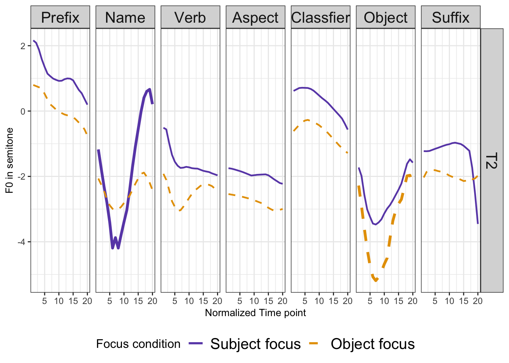
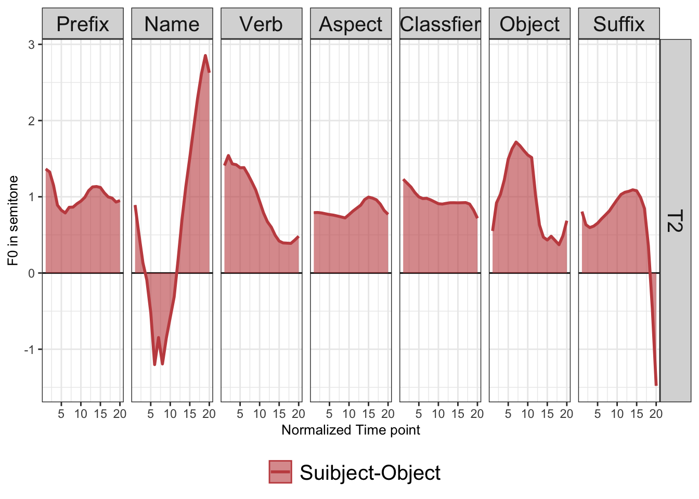
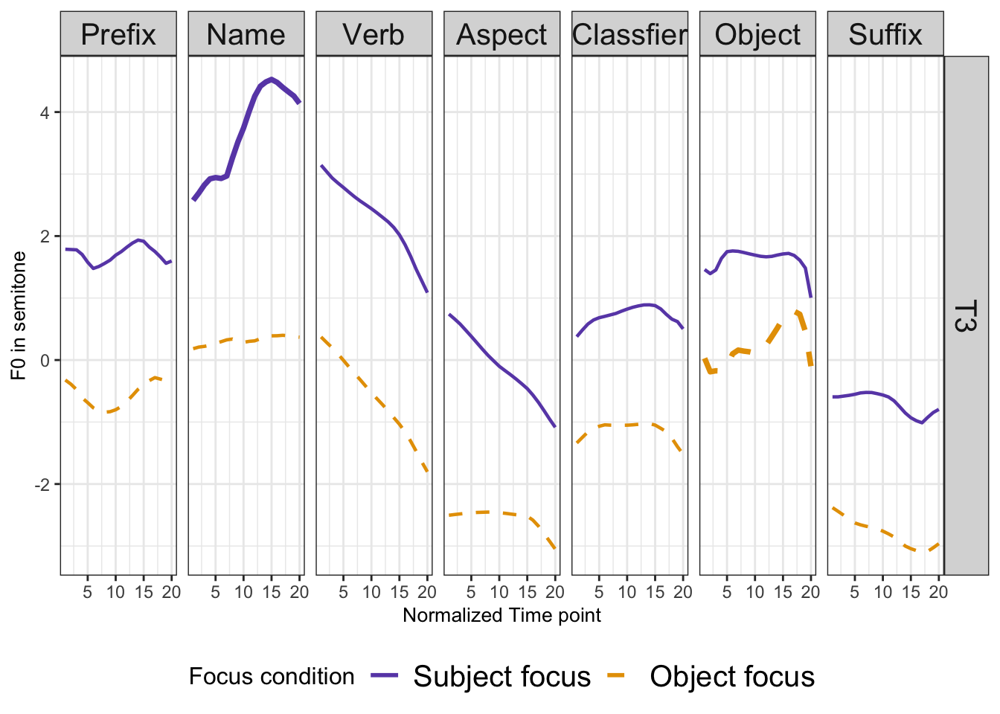
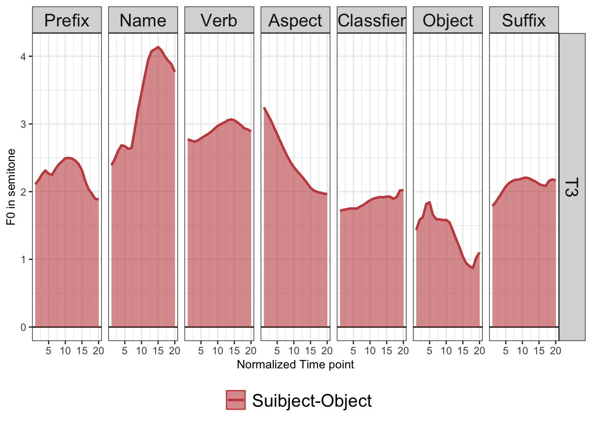
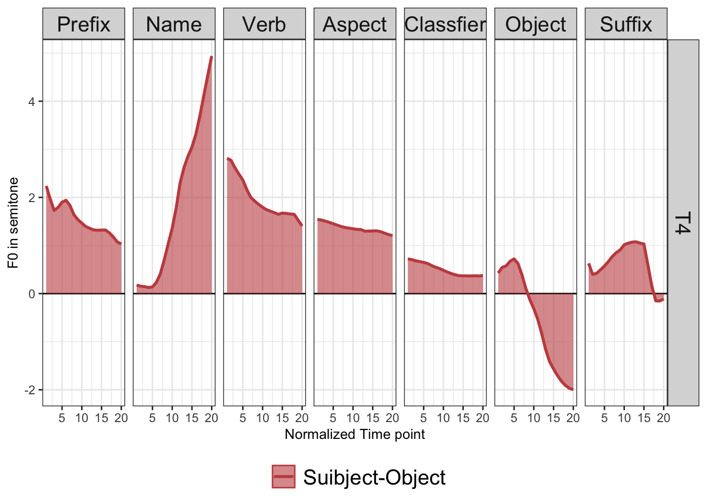

Demo in Changsha
In the provided transcriptions, the tones are represented using Chao numbers, with 1 indicates the lowest pitch, and 5 indicates the highest pitch.
The curve below represents three repetitions of one participant in each language.
The four tones of Changsha are: T1[34], T2[13], T3[42], T4[45], with two more tones now included here T5 [21] and T6[13].
T1
| 小 | 英 | 开 | 哒 | 只 | 椰 | 子 |
| ɕiaʊ42 | jɪŋ34 | kʰai34 | ta21 | tsa34 | iɛ34 | tsɹ33 |
| Name_prefix | Name | Verb | Aspect | Classifier | Object | Object_Suffix |
| ‘Xiao-ying opened a coconut.’ |
Subject focus (Purple line)
Object focus (orange line)
## `summarise()` has grouped output by 'FocusCon', 'tone', 'case'. You can override
## using the `.groups` argument.
T2
| 小 | 莹 | 提 | 哒 | 杂 | 篮 | 子 |
| ɕiaʊ42 | jɪŋ13 | tia13 | ta21 | tsa34 | lan13 | tsɹ33 |
| Name_prefix | Name | Verb | Aspect | Classifier | Object | Object_Suffix |
| ‘Xiao-ying brought a basket.’ |
Subject focus (purple line)
Object focus (orange line)

## `summarise()` has grouped output by 'FocusCon', 'tone', 'case'. You can override
## using the `.groups` argument.
T3
| 小 | 影 | 买 | 哒 | 只 | 李 | 子 |
| ɕiaʊ42 | jɪŋ42 | mɑi42 | tɑ21 | tsɑ34 | li42 | tsɹ33 |
| Name_prefix | Name | Verb | Aspect | Classifier | Object | Object_Suffix |
| ‘Xiao-ying bought a plum.’ |
Subject focus (purple line)
Object focus (orange line)

## `summarise()` has grouped output by 'FocusCon', 'tone', 'case'. You can override
## using the `.groups` argument.
T4
| 小 | 映 | 卖 | 哒 | 只 | 柚 | 子 |
| ɕiaʊ42 | jɪŋ45 | mɑi45 | tɑ21 | tsɑ34 | iou45 | tsɹ33 |
| Name_prefix | Name | Verb | Aspect | Classifier | Object | Object_Suffix |
| ‘Xiao-ying sold a grape fruit.’ |
Subject focus (purple line)
Object focus (orange line)
## `summarise()` has grouped output by 'FocusCon', 'tone', 'case'. You can override
## using the `.groups` argument.
Changsha combined
The above four figures are combined with the same f0 range on y-axis.